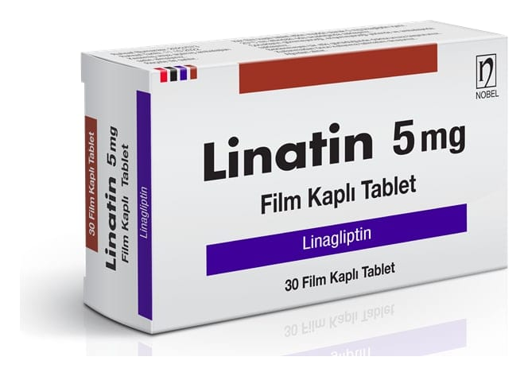

Linatin 5 mg Film Kaplı Tablet, 30 Adet

Ne için kullanılır
KT · Bölüm 1LİNATİN, linagliptin etkin maddesini içerir ve “oral antidiyabetikler” olarak adlandırılan bir ilaç grubuna aittir. Oral antidiyabetik ilaçlar, yüksek kan şekeri düzeylerini tedavi etmek için ağız yoluyla kullanılır. Bu ilaçlar, vücudunuzda kan şekeri seviyesinin düşürülmesine yardımcı olur. LİNATİN, erişkin Tip 2 diyabetli hastalarda, eğer hastalık oral antidiyabetik ilaçlardan (metformin veya sülfonilüreler) biri ile veya tek başına diyet ve egzersiz ile yeterince kontrol edilemiyorsa kullanılır. LİNATİN, diğer antidiyabetik ilaçlarla, örneğin metformin, sülfonilüre grubu ilaçlar (Örneğin, glimepirid, glipizid)) veya insülin ile birlikte kullanılabilir. Doktorunuz veya hemşireniz tarafından size önerilen diyet ve egzersize uymanız çok önemlidir.
LİNATİN, açık kırmızı renkli, yuvarlak bombeli film kaplı tabletlerdir. LİNATİN piyasaya 30 tablet içeren blister ambalajlarda sunulur.